<!-- structure and content go here -->

<!doctype html>
<html>

<head>
<meta http-equiv="Content-Type" content="text/html; charset=utf-8"/>
<title>Matthew Kulp</title>
<meta name="keywords" content="Matthew Kulp, furniture, industrial, design, RISD, Rhode Island School of Design, theravision, theramin, tv, television">
<meta name="description" content="Matthew Kulp design" >
<link rel="stylesheet" href="/css/site.css" type="text/css" charset="utf-8">
<script type="text/javascript" src="/js/jquery.js"></script>
<script type="text/javascript" src="/js/cycle.js"></script>
<script type="text/javascript" src="/js/site.js"></script>
<script type="text/javascript" src="/js/ga.js"></script>
<script type="text/javascript">


</head>
<body>


<!-- navigation -->
<div id="contact">
  <a name="0" href="mailto:contact@matthewkulp.com">contact@matthewkulp.com</a>
</div>
<div id="viewall">
    <a href="/nea/index.html#takeabreak">View all</a>
</div>
<div id="cv">
  <a name="0" href="/matthew_kulp_cv.pdf">Curriculum Vitae</a>
</div>

<!-- page nav -->
<div id="hatterynav">
    <ul>
        <li><a name="0" href="/nea/takeabreak/">Overview</a></li>

        <li><a name="0" href="/nea/takeabreak/pm/">Project Management</a></li>

        <li><a name="0" href="/nea/takeabreak/finance/">Financial Management</a></li>

        <li><b>Marketing & Brand</b></li>
    </ul>
</div>


<!-- header -->
<div id="header"></div>


<!-- content -->
<div id="content">
    <div class="project">
        
        <h1>Directing a unique brand and diverse marketing strategies</h1>

        <p>
        A particularly exciting challenge with Take a Break has been crafting a visual identity that stands out, represents our ethos and also resonates with our market. Every year, we brought on a Graphic Designer with a unique perspective to develop a seasonal aesthetic, experimental marketing proposal and brand vision. Our position at an art school, as a small organization, allowed our designers to experiment freely with their approaches - taking risks that would likely be discouraged in more conservative marketplaces.
        </p>        
        <div class="callout">
          <h1 class="stats">
            <div class="num">3</div>brand iterations 
            <div class="num">7</div>utilized marketing methods 
          </h1>
          <h4>
          "Our position at an art school, as a small organization, allowed our designers to experiment freely with their approaches - taking risks that would likely be discouraged in more conservative marketplaces."
          </h4>
        </div>
     
     
        <!-- 2010 --> 
        <h3>First iteration - Year 1</h3>
        
        <p>
        In our first year (2010), we wanted a simple but solid multifaceted approach. The tone should be fun, the imagery bold. We asked <a href="http://www.calvinwaterman.com/">Calvin Waterman</a> to do the material for us and we are glad we did. His work would serve as the foundation for future events.
        </p>
        
        <!-- Calvin Waterman Promo -->
        <div class="mediaCallout">
          <iframe src="http://player.vimeo.com/video/11417082" width="500" height="309" frameborder="0" webkitAllowFullScreen mozallowfullscreen allowFullScreen></iframe>
          <div class="details">Promo video for TAB 2010 from <a href="http://www.calvinwaterman.com/">Calvin Waterman</a>. Music by The Books.</div> 
        </div>
        
        
        <div class="mediaCallout">
            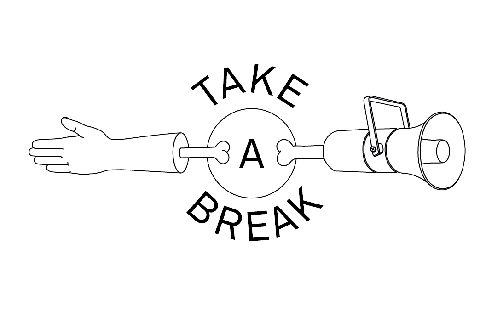
            <div class="details">Take A Break logo from <a href="http://www.calvinwaterman.com/">Calvin Waterman</a>.</div>
        </div>
    
    
        <div class="mediaCallout">
          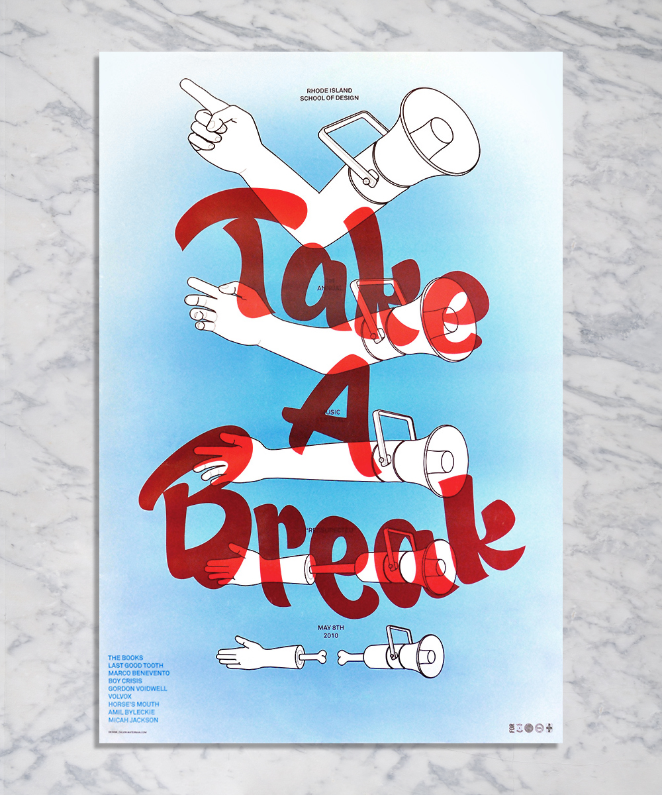
          <div class="details">Large format promotional poster by <a href="http://www.calvinwaterman.com/">Calvin Waterman</a>.</div>
        </div>

        <div class="break500"> </div> 
 
        <!-- 2011 --> 
        <h3>Second iteration - Year 2</h3>
 
        <p>
        At the second Take A Break (2011) we brought on <a href="http://ja.ckjennin.gs/">Jack Jennings</a> as our designer. An important and lacking component from the previous year was a promotional website. We wanted to include promotional offers and also engage users with the brand long before the event. As a competent web developer, <a href="http://ja.ckjennin.gs/">Jack</a> proposed that we employ a gamified promotion via the website.
        </p>
 
        <p>
        Users visit the website and the visuals are generated based on a series of rules and randomizations. Every visitor sees something different. The user holds the button down and the user with the best time, adds their name to the leader board. The highest score on the day of the concert gets free tickets.     
        </p>
        <div class="mediaCallout">
          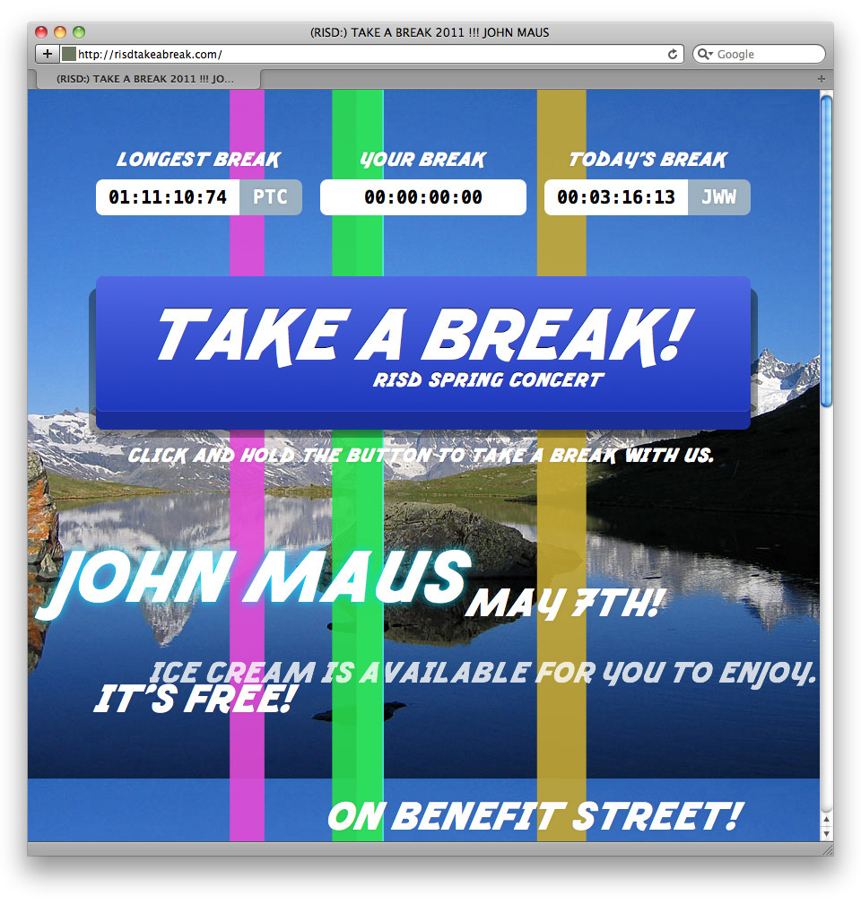
          <div class="details">TAB 2011 Website by <a href="http://ja.ckjennin.gs/">Jack Jennings</a>.</div>
        </div>
        
        <p>
        Fracture is a typeface developed specifically for the TAB 2011 event by <a href="http://ja.ckjennin.gs/">Jack Jennings</a>.
        </p>
        
        <div class="mediaCallout">
          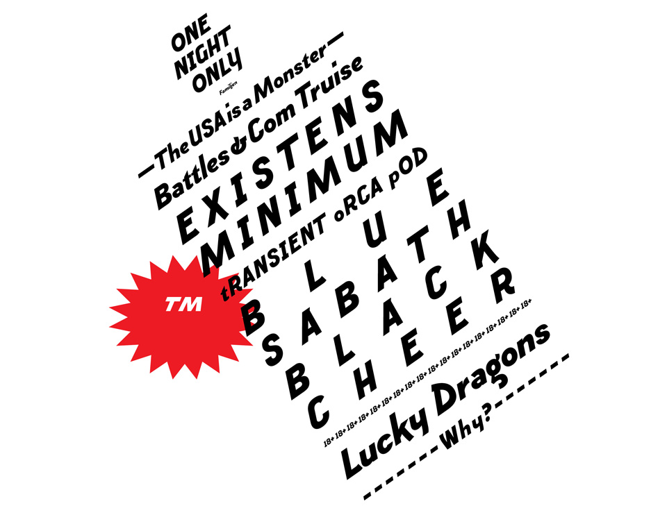
        </div>
        
        <!-- Michael Fails Video Recap -->
        <div class="mediaCallout">
          <iframe src="http://player.vimeo.com/video/33224446" width="500" height="281" frameborder="0" webkitAllowFullScreen mozallowfullscreen allowFullScreen></iframe>
          <div class="details">TAB 2011 Recap put together by <a href="https://vimeo.com/michaelfails">Michael Fails</a>.</div>
        </div>
        
        <div class="mediaCallout">
          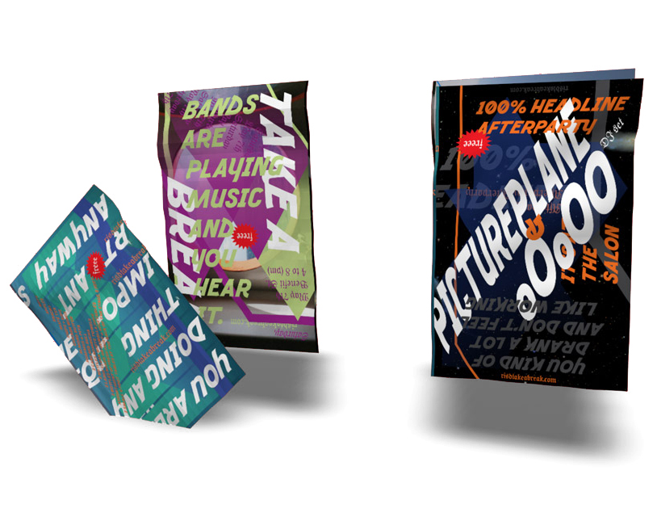
          <div class="details"> TAB 2011 poster series by <a href="http://ja.ckjennin.gs/">Jack Jennings</a> is derived through a pre-determined system and a series of randomizations.</div>
        </div>

        
        <div class="break500"> </div>

        
        <!-- 2012 -->
        <h3>Third iteration - Year 3</h3>
         
        <p>
        In my final year as creative director, we continued to build on the lessons of past years. We brought on <a href="http://helennn.com/">Helen Koh</a> as lead Designer and  <a href="http://ja.ckjennin.gs/">Jack Jennings</a> as web developer. For the 2012 year we would do a full sweep - adding social media components, multi-phased printed material, direct mailers and two pre event promo videos.
        </p>
        
        <h4>"We decided that it was important to increase the quantity of promotion even though it may at times be incohesive. We were making a commitment to a strong promotion strategy and made plans to expand the team and increase content cohesion in future years."</h4>
        
        <!-- Helen Koh Promo -->
        <div class="mediaCallout"> 
          <iframe src="http://player.vimeo.com/video/39295599" width="500" height="350" frameborder="0" webkitAllowFullScreen mozallowfullscreen allowFullScreen></iframe>
          <div class="details">TAB 2012 announcement promo by <a href="helennn.com">Helen Koh</a>.</div>
        </div>
        <div class="mediaCallout">
          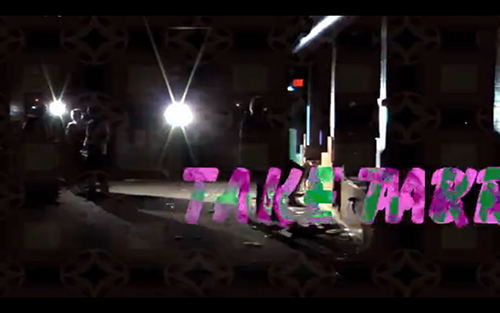
          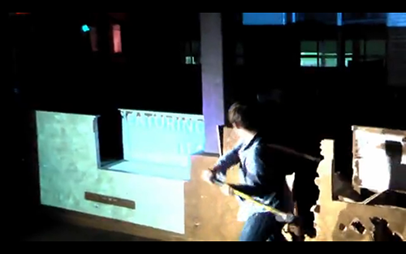
          <div class="details">Screens from the TAB 2012 line-up announcement video by <a href="https://vimeo.com/user5144540">Marty Tzonev</a>. Also revealing the venue space for the first time.</div>
          <br>
          
          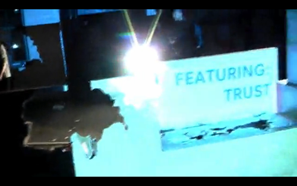
          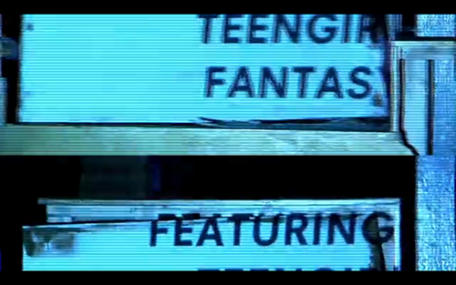
          
          <br>
          
          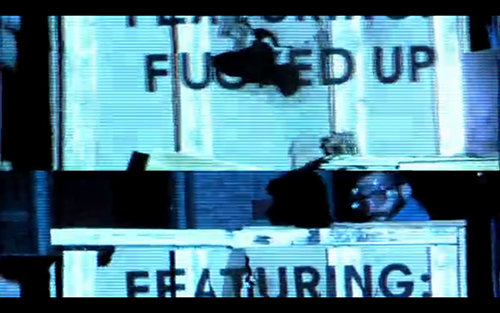
          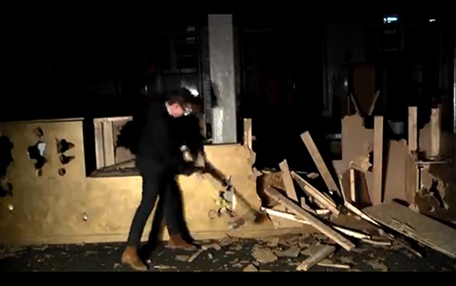
        </div>   
        
        <div class="mediaCallout">
          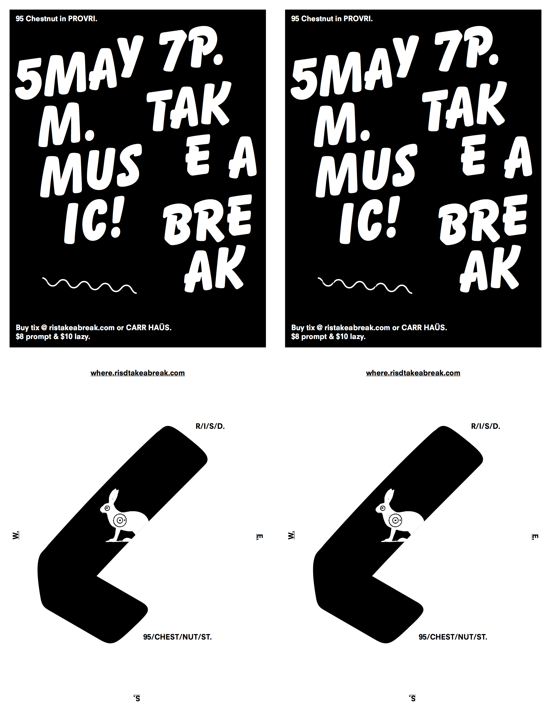
          <div class="details">TAB 2012 mailer by <a href="helennn.com">Helen Koh</a>.</div>
        </div>     

        <h3>Phase 1</h3>
        
        <div class="mediaCallout">
          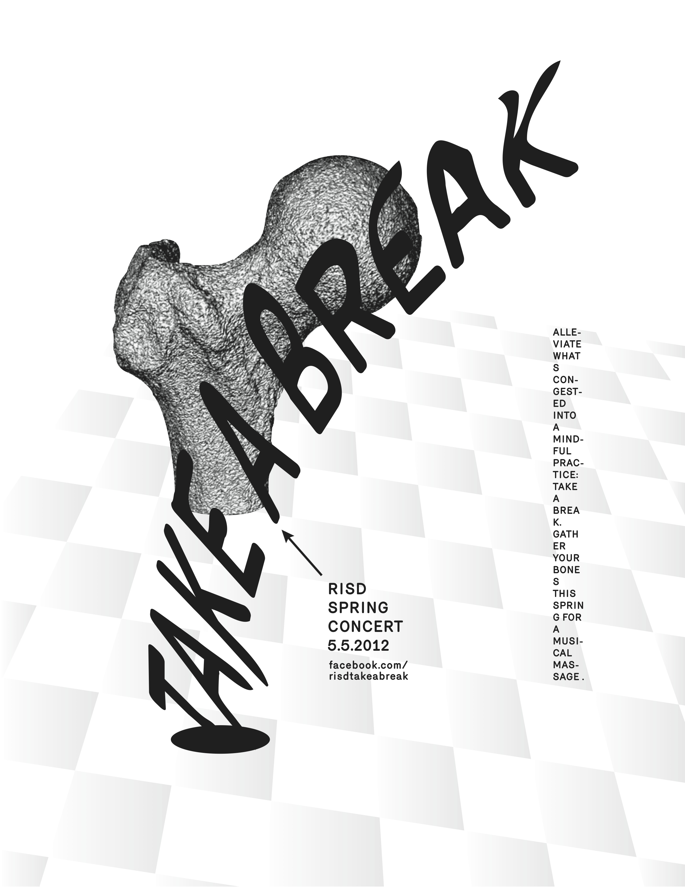
          <div class="details">TAB 2012 announcement poster by <a href="helennn.com">Helen Koh</a>. 3 months in advance.</div>
        </div>     
        
        <h3>Phase 2</h3>
        
        <div class="mediaCallout">
          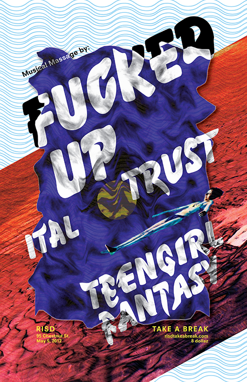
          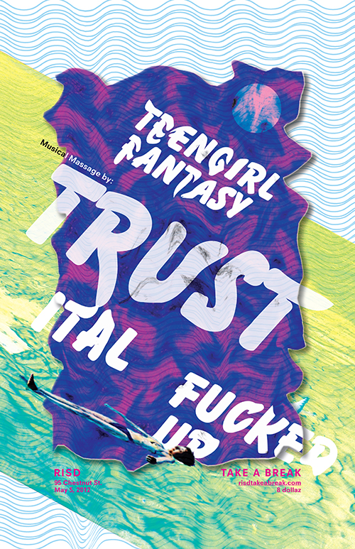
          <div class="details">TAB 2012 announcement poster by <a href="helennn.com">Helen Koh</a>. 2 months in advance.</div>
           
          <br>
          
          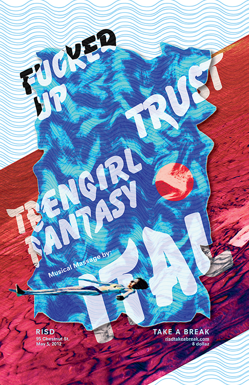
          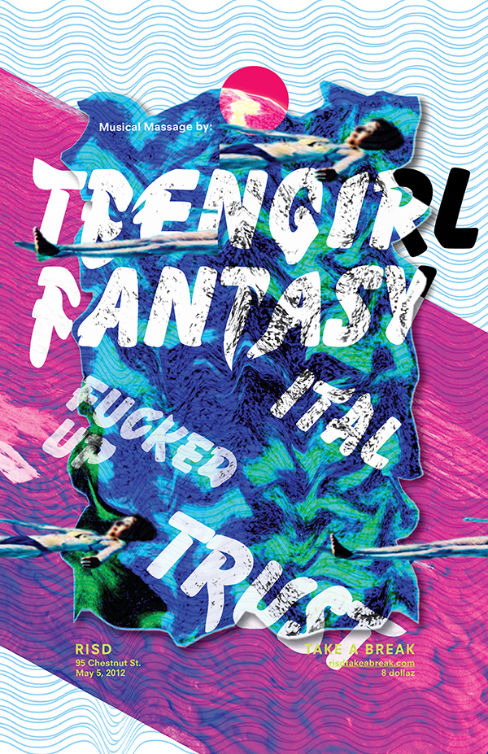
        </div>
        
        <h3>Phase 3</h3>
        
        <div class="mediaCallout">
          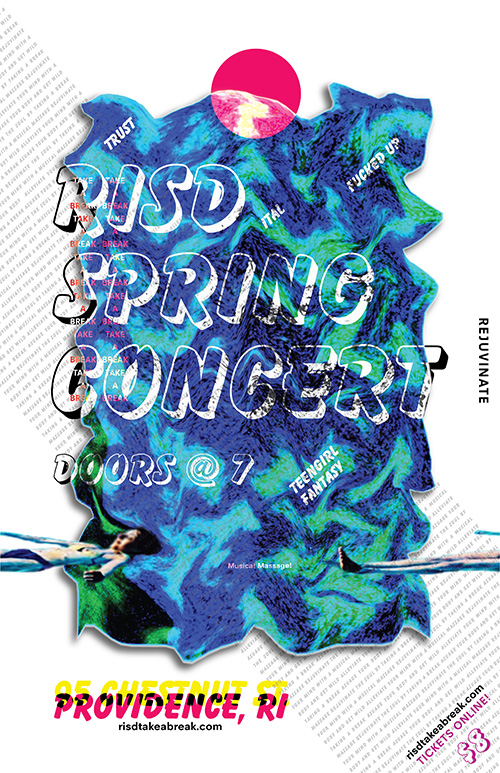
          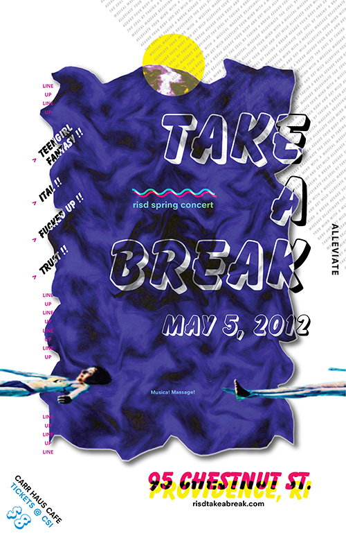
          <div class="details">TAB 2012 announcement poster by <a href="helennn.com">Helen Koh</a>. 1 months in advance.</div>
        </div>     

        <p>
        An interactive website with a gamified promotional offer. The artist name move around screen while their music videos play in the background. Users come to the site and are asked to shoot a blue bunny that moves randomly around the screen. If multiple users are on the site at the same time, they see each others crosshairs and compete to shoot the bunny. The person with the highest score on the day of the event, earns free tickets. By <a href="helennn.com">Helen Koh</a> and <a href="ja.ckjennin.gs">Jack Jennings</a> 
        </p>
        
        <div class="mediaCallout">
          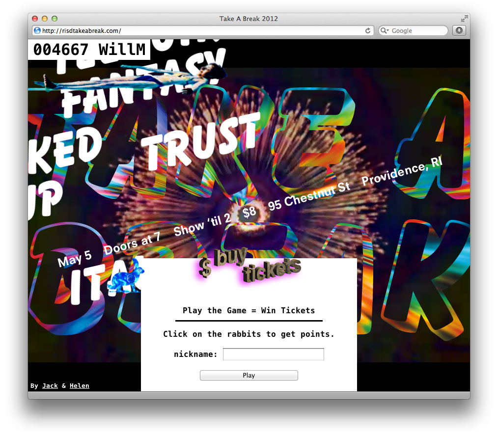
          <div class="details">Website by <a href="helennn.com">Helen Koh</a> and <a href="ja.ckjennin.gs">Jack Jennings</a>. 
          </div>
        </div>
        
        <div class="mediaCallout">
          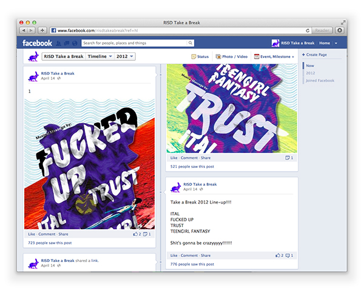
          <div class="details">Leveraging social media.
          </div>
        </div>
        

<!-- copyright -->
<div class="break"> </div>

<div id="copyright">
    Copyright 2012
</div>


</body></html>
